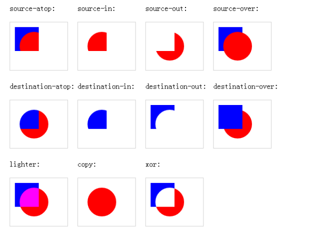

Canvas
- Canvas 通过 JavaScript 来绘制 2D图形。Canvas 是逐像素进行渲染的。开发者可以通过javascript脚本实现任意绘图
- 理一下步骤吧
//1.通过canvas标记的方式获取当前画布对象 var myCanvas = document.getElementById("myCanvas"); //2.创建context对象从canvas中获取 var ctx = myCanvas.getContext("2d"); //3.绘制图形- 矩形
ctx.fillStyle = "#228800"; //填充颜色，相当于css中的background-color ctx.fillRect(40,100,30,30);//绘制填充矩形 ctx.lineWidth = 5; ctx.strokeStyle = "#228800"; //轮廓颜色 ctx.strokeRect(45,150,25,25); //绘制轮廓矩形 //ctx.clearRect(0,0,55,260); //清除画布 ctx.strokeStyle="#008000"; ctx.fillStyle="#CD0000"; ctx.rect(40,200,50,50); //画矩形，可以填充也可以加轮廓 ctx.stroke();//绘制轮廓 ctx.fill();//填充矩形
- 圆形
//绘制圆形 //beginPath方法绘制路径 ctx.beginPath(); //arc方法绘制曲线 ctx.arc(100,40,50,0,Math.PI); ctx.fill(); ctx.stroke(); //结束路径的绘制(若不闭合，那么填充的时候很有可能会出问题) ctx.closePath();
- 直线
ctx2.moveTo(100,100); //路径的起始点 ctx2.lineTo(50,50); //添加一个新点，然后把这两个点连接起来 ctx2.lineTo(0,50); //把（50，50）和（0，50）两个点连接起来 ctx2.lineTo(100,100); ctx2.strokeStyle = "#fff"; //线条的颜色 ctx2.lineWidth = 5; //线条的粗细程度 ctx2.stroke();
- 矩形
- ctx.arc(100,100,10,Math.PI/180*360); //弧度的转换,360则为你想转换的度数
- 绘制阴影
ctx.shadowColor = "red"; //阴影颜色 ctx.shadowBlur = 40; //模糊程度 ctx.shadowOffsetX = 10; //x轴偏移量 ctx.shadowOffsetY = 10; //y轴偏移量
- 再说一个贝塞尔曲线，反正我是觉得简直不要太变态，这个东西太难凑数了！（让然这是在没有PS的情况下，用了ps的钢笔工具还是66的）
- 先说一个控制点的（也就二次贝塞尔曲线）:二次贝塞尔曲线需要两个点。第一个点是用于二次贝塞尔计算中的控制点，第二个点是曲线的结束点。曲线的开始点是当前路径中最后一个点。如果路径不存在，那么请使用 beginPath() 和 moveTo() 方法来定义开始点
quadraticCurveTo(cpx,cpy,x,y) //cpx，cpy表示控制点的坐标, x，y表示终点坐标； 开始点：moveTo(20,20)
控制点：quadraticCurveTo(20,100,200,20)
结束点：quadraticCurveTo(20,100,200,20)
开始点：moveTo(20,20)
控制点：quadraticCurveTo(20,100,200,20)
结束点：quadraticCurveTo(20,100,200,20)
- 接下来是两个控制点的（三次贝塞尔曲线）:三次贝塞尔曲线需要三个点。前两个点是用于三次贝塞尔计算中的控制点，第三个点是曲线的结束点。曲线的开始点是当前路径中最后一个点
bezierCurveTo(cp1x,cp1y,cp2x,cp2y,x,y) //cp1x，cp1y表示第一个控制点的坐标, cp2x，cp2y表示第二个控制点的坐标, x，y表示终点的坐标； 开始点：moveTo(20,20)
控制点 1：bezierCurveTo(20,100,200,100,200,20)
控制点 2：bezierCurveTo(20,100,200,100,200,20)
结束点：bezierCurveTo(20,100,200,100,200,20)
开始点：moveTo(20,20)
控制点 1：bezierCurveTo(20,100,200,100,200,20)
控制点 2：bezierCurveTo(20,100,200,100,200,20)
结束点：bezierCurveTo(20,100,200,100,200,20)
- 先说一个控制点的（也就二次贝塞尔曲线）:二次贝塞尔曲线需要两个点。第一个点是用于二次贝塞尔计算中的控制点，第二个点是曲线的结束点。曲线的开始点是当前路径中最后一个点。如果路径不存在，那么请使用 beginPath() 和 moveTo() 方法来定义开始点
- 这是一个关于我们绘图的样式的一个很重要的知识点
- save():保存当前的绘图状态。
注意：save()方法不仅包括当前坐标系统的状态，也包括CanvasRenderingContext2D所设置的填充风格、线条风格、阴影风格的各种绘图状态。但save方法不会保存当前Canvas上绘制的图形
- restore():恢复之前保存的绘图状态。两者配合使用，但restore不能比save多
来打个比方好勒，canvas.save();和canvas.restore();是两个相互匹配出现的，作用是用来保存画布的状态和取出保存的状态的。 当我们对画布进行旋转，缩放，平移等操作的时候其实我们是想对特定的元素进行操作， 比如图片，一个矩形等，但是当你用canvas的方法来进行这些操作的时候，其实是对整个画布进行了操作，那么之后在画布 上的元素都会受到影响，所以我们在操作之前调用canvas.save()来保存画布当前的状态，当操作之后取出之前保存过的状态， 这样就不会对其他的元素进行影响 - save():保存当前的绘图状态。
- 绘制变形图形
- 绘制平移效果：translate(x,y) 以原点为参考，默认原点为（0，0）
即变换原点坐标
综合的例子 canvas.save(); //锁画布(为了保存之前的画布状态) canvas.translate(10, 10); //把当前画布的原点移到(10,10),后面的操作都以(10,10)作为参照点 drawScene(canvas); canvas.restore(); //把当前画布返回（调整）到上一个save()状态之前 canvas.save(); //锁画布(为了保存之前的画布状态) canvas.translate(160, 10); //把当前画布的原点移到(160,10),后面的操作都以(160,10)作为参照点 canvas.clipRect(10, 10, 90, 90); //这里的真实坐标为左上(170,170)、右下(250,250) drawScene(canvas); canvas.restore();
- 绘制缩放效果：scale() 方法缩放当前绘图，更大或更小
scale(2,3)：宽度200%，高度300%要注意的是：如果您对绘图进行缩放，所有之后的绘图也会被缩放。 定位也会被缩放。如果您 scale(2,2)，那么绘图将定位于距离画布左上角两倍远的位置 - 绘制旋转效果：rotate(angel):旋转.angle指旋转的角度，顺时针旋转,旋转的时候记得要把中心转换一下，否则旋转的中心是canvas的左上角（scale()的中心也是左上角），也就是点(0,0)
所以我们需要结合translate(x,y)一起使用
- 接下来是一个组合图形，我一直记不住，直接上图好了
这是一张用法的解释 接下来是表现的形式，帮助理解,蓝色部分为canvas画布，红色为绘图部分 
- 绘制平移效果：translate(x,y) 以原点为参考，默认原点为（0，0）
- 绘制图象
- drawImage
var img = new Image(); img.src = "01.jpg"; img.onload = function(){ ctx.drawImage(img,0,0,300,180); } - 图象像素
function draw(id){ var myCanvas = document.getElementById(id); var context = myCanvas.getContext("2d"); var img = new Image; img.src="../3.30/img/zhuomian.jpg"; img.onload=function(){ context.drawImage(img,0,0); var imagedata = context.getImageData(0,0,img.width,img.height); for(var i = 0,n = imagedata.data.length;i < n ; i +=4){ imagedata.data[i+0] = 255-imagedata.data[i+0]; //返回一个对象，其包含指定的 ImageData 对象的图像数据 imagedata.data[i+1] = 255-imagedata.data[i+1]; imagedata.data[i+2] = 255-imagedata.data[i+2]; } context.putImageData(imagedata,0,0); } } - 剪裁图象：clip，表示给canvas设置一个剪辑区域，在调用该方法后，所有代码支队剪辑区域有效，不会影响 其他地方，在更新局部时很有用，默认情况下剪裁区域是一个左上角在(0，0)位置，宽高分别等于canvas元素的宽高的矩形
- drawImage